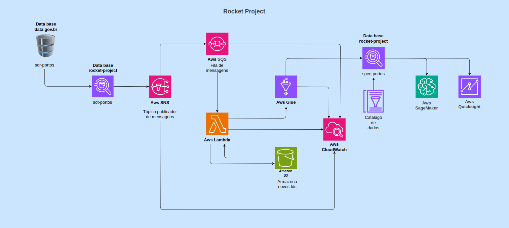

Sobre o Projeto
Este projeto demonstra a criação de uma, infraestruetura de dados completa na Amazon Web Services (AWS), desde a ingestão até a visualização de insights. A arquitetura foi projetada para ser escalável, resiliente e eficiente.
Tecnologias Utilizadas
Principais ferramentas e serviços da AWS usados neste projeto:
- Amazon S3: Para armazenamento seguro e escalável dos dados brutos.
- AWS Glue: Para ETL (Extração, Transformação e Carga) dos dados.
- Amazon Athena: Para análise interativa de dados diretamente no S3.
- Amazon QuickSight: Para criação de dashboards e visualizações interativas.
- AWS Lambda: Para automação e orquestração de tarefas.
- Amazon Simple Notification Service: Para envio de notificações e mensagens entre serviços.
- Amazon Simple Queue Service:Para gerenciamento de filas de mensagens entre serviços.
- Amazon SageMaker:Para construção, treinamento e implantação de modelos de machine learning.
Arquitetura
A arquitetura da pipeline segue as melhores práticas da AWS, com dados fluindo de uma área de ingestão (S3) para uma área de processamento (Glue) e, finalmente, para um data warehouse/mart para análise.
Resultados e Insights
Com esta pipeline, fomos capazes de processar grandes volumes de dados de forma eficiente e gerar os seguintes insights:
- Análise do **fluxo de carga** por porto e tipo de mercadoria.
- Identificação dos **períodos de pico** e de baixa atividade nos terminais.
- Previsão da **demanda de navios** e otimização de berços para o próximo trimestre.
- Previsão e mitigação de problemas comuns nos portos.
Diagrama da Arquitetura
Abaixo está o diagrama que ilustra a arquitetura da pipeline de dados implementada na AWS:
Infraestrutura como Código (IaC)
A automação e a resiliência do projeto são garantidas através do uso de Infraestrutura como Código (IaC). Todo o ambiente AWS, incluindo buckets S3, pipelines do AWS Glue e clusters Redshift, foi provisionado e configurado usando scripts de automação.
Utilizamos o GitHub Actions para orquestrar e gerenciar todo esse processo. Cada alteração no código do projeto ou nos scripts de infraestrutura dispara automaticamente um fluxo de trabalho que:
- Valida a sintaxe e a lógica dos scripts de infraestrutura.
- Executa o provisionamento dos serviços necessários na AWS.
- Garante que o ambiente esteja sempre atualizado e em sincronia com o código-fonte do repositório.
Essa abordagem elimina o trabalho manual e repetitivo, garantindo consistência, rastreabilidade e um processo de deploy seguro e eficiente. O GitHub Actions atua como o motor do nosso pipeline de CI/CD (Continuous Integration/Continuous Deployment), conectando o nosso repositório diretamente à nuvem da AWS.
Origem dos Dados
Os dados utilizados neste projeto são de domínio público e foram obtidos através do portal Data Gov BR. Especificamente, a análise se concentra em conjuntos de dados sobre a movimentação de cargas e navios nos portos brasileiros, disponibilizados pelo governo para promover a transparência e a inovação.
A escolha dessa fonte de dados reforça o objetivo do projeto de utilizar informações de alta relevância e qualidade para gerar insights sobre a logística portuária nacional, demonstrando como dados abertos podem ser transformados em conhecimento valioso com o uso de ferramentas de computação em nuvem como a AWS.